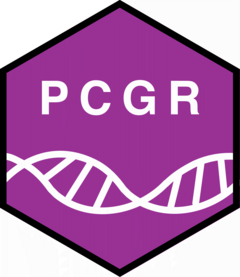

Assign tiers of clinical significance (AMP/ASCO/CAP framework) to somatic SNVs/InDels
Source:R/variant_classification.R
assign_variant_tiers_snv_indel.RdFunction that assigns tiers of clinical significance (AMP/ASCO/CAP framework) to somatic SNVs/InDels based on biomarker evidence items. The function considers the strength of evidence (evidence levels) and the match between biomarker site and primary site of query tumor. The function also considers variant properties associated with oncogenes and tumor suppressor genes (e.g. low MAF, coding status), which are used to assign tier 3 status to variants with uncertain clinical significance.
Usage
assign_variant_tiers_snv_indel(
primary_site = "Any",
biomarker_mapping_confidence = "medium",
var_df = NULL,
etype_for_tiering = c("predictive"),
biomarker_items = NULL
)Arguments
- primary_site
primary tumor site of query tumor (e.g. 'Lung', 'Breast', 'Any')
- biomarker_mapping_confidence
confidence level of variant-biomarker mapping resolution (e.g. 'high' or 'medium')
- var_df
data frame with somatic SNV/InDel variants
- etype_for_tiering
evidence type(s) to consider for tier classification (e.g. 'predictive', 'prognostic', 'diagnostic')
- biomarker_items
data frame with biomarker evidence items